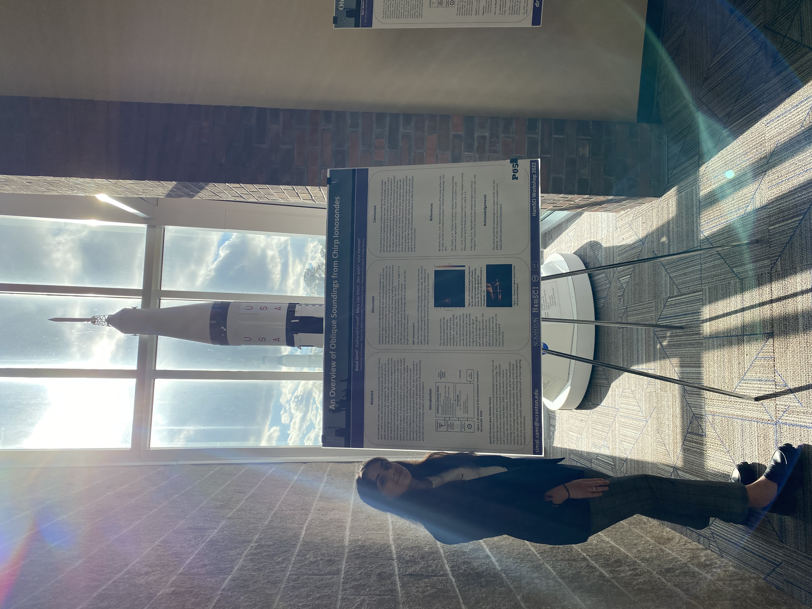
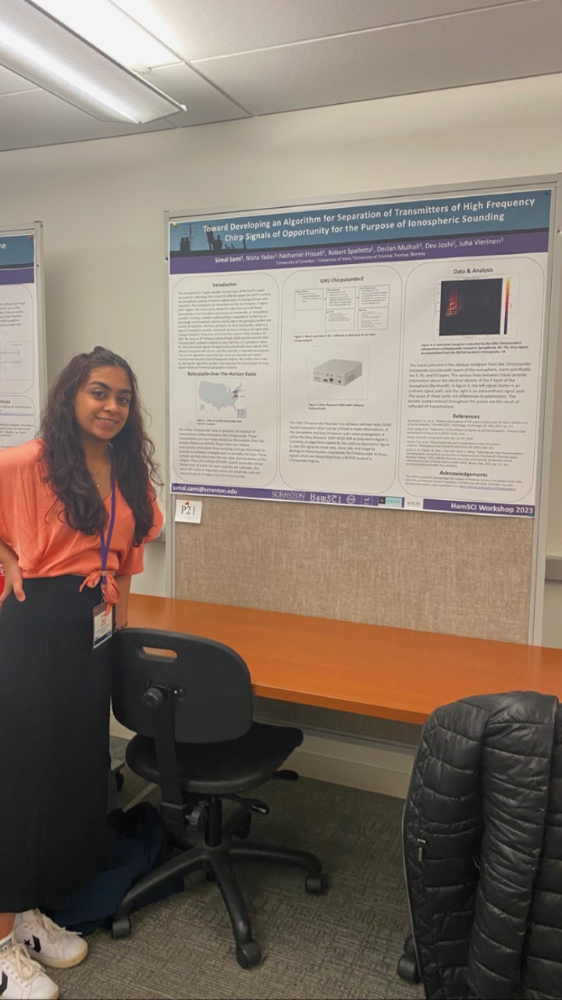

Towards Developing an Algorithm for the Separation of Transmitters of High Frequency Chirp Signals
of Opportunity for the Purpose of Ionospheric Sounding Department of Physics & Engineering, University of Scranton
I am currently working as a research assistant conducting deep space and ionospheric research funded by The National Science Foundation to support its Distributed Array of Small instruments
(DASI) Personal Space Weather Station (PSWS). I am working towards developing an algorithm which can load,
analyze, identify, and plot received data signals from a Chirp sounder radio receiver utilizing python and various data
visualization software. Ultimately, this project will aid in our understanding of how the ionosphere impacts radio
wave propagation.
Coupling, Energetics and Dynamics of Atmospheric Regions Conference
Austin, Texas

HamSCI Conference
U.S. Space & Rocket Center, Huntsville Alabama

HamSCI Conference
University of Scranton
Mock Information Security Policy
I created this mock information security policy for my information security policy and addresses various aspects of security within the healthcare industry such HIPAA compliance. This strategy formulates a plan in a cost-effective manner to minimize risk.
Defender's Point of View: Information Security Plan